Condensed round, 2026-11-21. The brief, the notes, the control's rules in the card room spec, sections 5.7 and 6. Four candidates built in the console lab's real opened card (candidates.js, shoot.js, sheets.sh): each candidate's own count drives the real field and the server's readout route, and node shoot.js check proves it at 1440 and 390 px. Scenes: card #640 ahead of time (at 3 the spend limit and the starts rise), card #641 at the money stop, card #642 the chat's spent budget.
--need with a light amber fill. They are radios named extend.sessions, so the arrow keys move along them. 32 px high at the desk; at 390 px the row fills the width, 44 px high. One session's worth stands beside them: "Each is about 14 min and 1.20 EUR, from its 3 sessions so far."--text, what the card then has in --text, what is left in --text-muted, figures in mono and right-aligned, headers in small capitals in --text-faint (5.2:1 in the dark theme and 5.5:1 in the light theme on the drawer). When nothing is added, the adds cell says why: "enough" or "left out".--text: "The spend limit rises from 8.00 to 8.70 EUR first." The starts follow in --text-muted, the project's month in --text-faint.Why D2. What a press adds and what the card then has stand in aligned columns, so the eye compares figures instead of parsing sentences. Any count takes one press. In the compare pass both critics pick D2: Gemini 9/8/6/9/7, GLM 9/9/9/10/8 (count, readout, tick, places, craft).
Why A2 is the runner-up. It keeps the server's lines word for word and is the smallest build: a stepper and a label column. But 5 takes four presses, and its figures sit inside sentences. GLM picked A in loop 1, and Gemini ranked it second.
Why not the others. B's five buttons had the best count of loop 1 (Gemini 10), so they went into D2; its readout as sentences scans worse than a table. C's paragraph hides the figures (readout 1 from Gemini, 4 from GLM), and its choice takes two presses.
Where the critics disagree. In loop 1, Gemini picked D with A as its runner-up and GLM picked A with D. They split on C's craft (4 against 9) and on D's chat: GLM called a table for one amount over-built in loop 1 (places 4) and gave D2's chat 10 in the compare pass. They split on "left out": Gemini finds it ambiguous, GLM finds it plain. The director keeps "left out", because the tick beside it is clear.
Ahead of time at 3, desk, dark and light:
Phone, 390 px: ahead of time at 3 (dark, light), the money stop (dark), the chat's budget ask (light):
A2: A with what the card then has in --text and the chat's field aligned with the rows. D2: D with B's five buttons in place of the number field, the spend limit moved out of the table, and the then column in --text.
| critic | A2 count | readout | tick | places | craft | D2 count | readout | tick | places | craft | pick |
|---|---|---|---|---|---|---|---|---|---|---|---|
| Gemini 2.5 Pro | 4 | 5 | 8 | 4 | 3 | 9 | 8 | 6 | 9 | 7 | D2 |
| GLM 5V Turbo | 4 | 5 | 6 | 2 | 6 | 9 | 9 | 9 | 10 | 8 | D2 |
Overruled in the compare pass. Gemini: A2 has "poor touch targets" and "breaks down on narrow screens". Its stepper buttons measure 44 by 44 px at 390 px. The money row wraps to two lines, nothing is cut, and nothing scrolls sideways. Both critics: the small-caps labels and the table headers are low in contrast. --text-faint on the drawer's --bg-raised measures 5.2:1 dark and 5.5:1 light, above the 4.5:1 floor. Their size, 12 px in small capitals, is a fair note for the build. Gemini: write "0 min" for "enough". "Enough" says why nothing is added, and a 0 does not. Gemini: put the spend limit back into the table. Its figure is a limit, so the "left" column would be wrong. GLM: A2 "abandons its pattern" for a raw field in the chat. Both finalists keep the EUR field there, and A2 keeps its label column. That D2 puts the field into its money row stands. GLM: D2's buttons need a focus ring. They have one, 2 px in --focus, and the 3x crop shows no element in focus. GLM: the phone's table rows risk small targets. No row holds a target but the tick, and the tick's target is 44 px.
Kept for the build. Gemini: 4 px more between "Each is about…" and the table at 390 px. GLM: give the table's headers a little more weight.
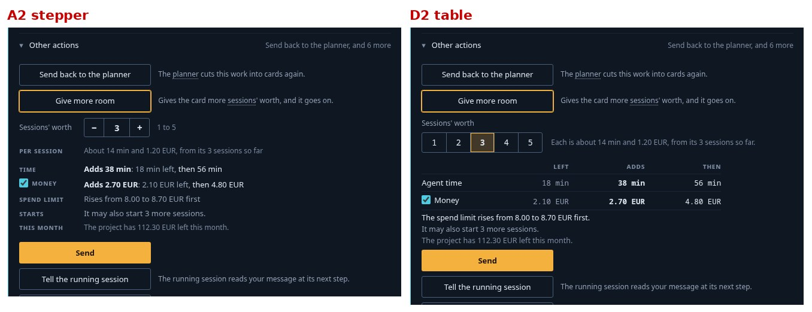
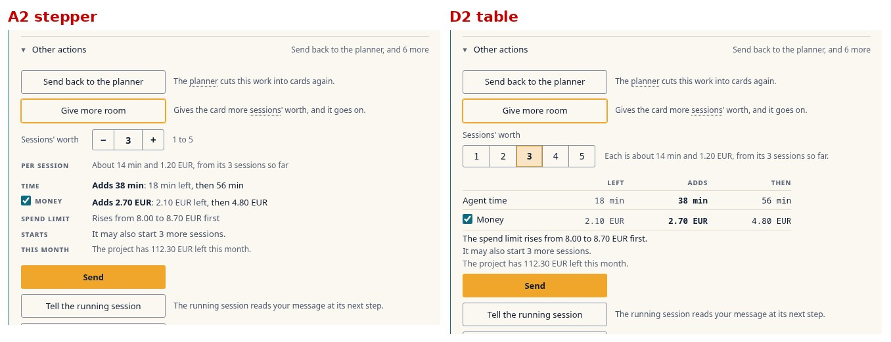
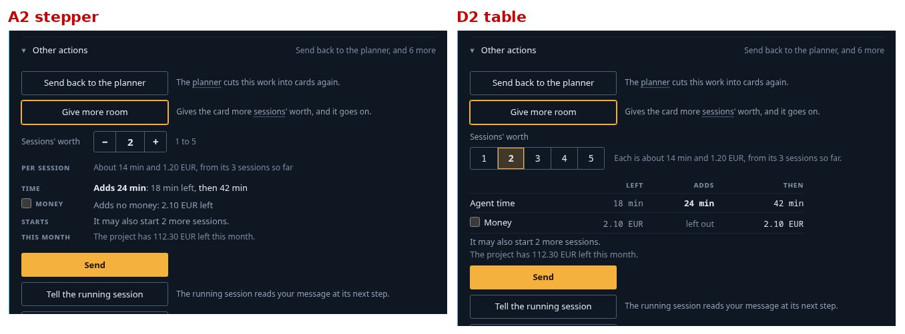
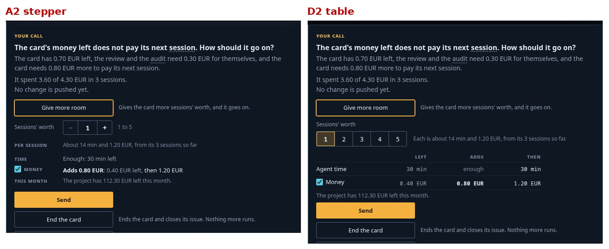
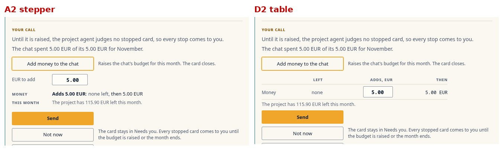
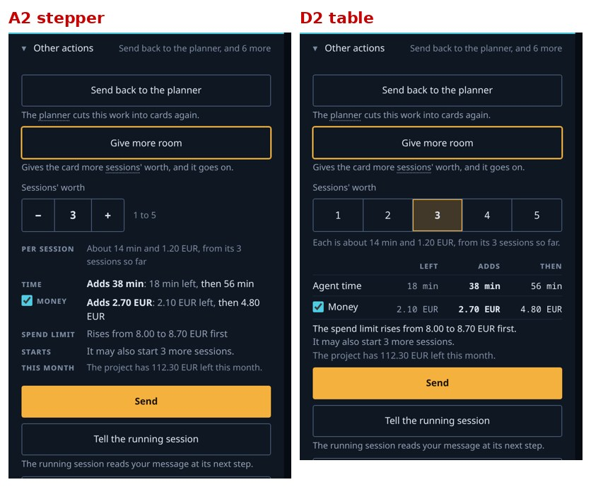
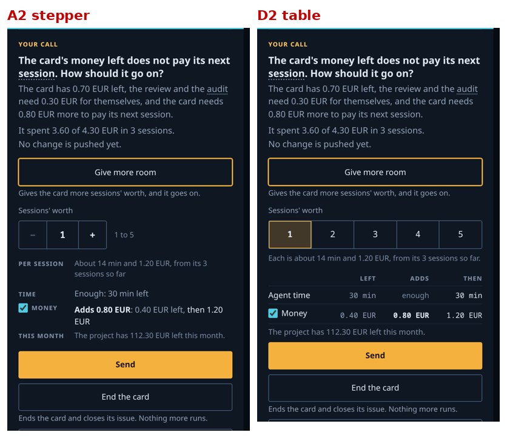
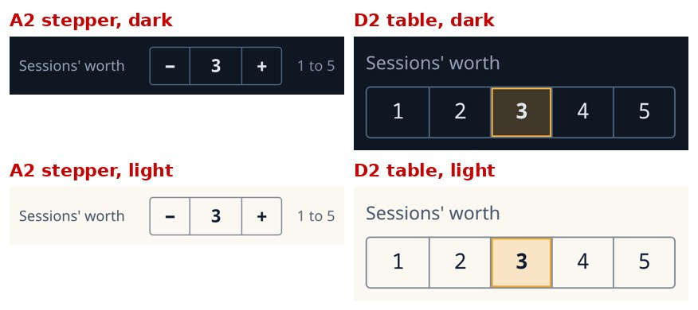
You compare two finalist designs for one control in a console that runs AI coding agents. Be concrete and critical; do not flatter.
The situation. Each piece of work is a card with a cap on its sessions, a cap on its agent time and a money budget in EUR. "Give more room" gives a card more of all three at once, counted in "sessions' worth": one session's worth is the card's own average session (here about 14 min and 1.20 EUR, from its 3 sessions). The human picks a count from 1 to 5 (it opens at 1) and presses Send. The server writes the readout from the count and the money tick and writes it again on every change; the browser computes no figure. The money tick is set when the card lacks money; cleared, the press gives time and starts but no money. When the money would pass the card's spend limit, the limit rises first. The control shows ahead of time among a running card's "Other actions", as the answer at the card's money stop, and, as the money line alone with an EUR field, on the chat's monthly budget question. The button "Give more room", its effect line and the amber Send are fixed.
- A2: a stepper (minus, the count, plus) with "1 to 5"; minus is disabled at 1 and plus at 5. The readout as rows with a short small-caps label at the left: per session, time, money (with its tick), spend limit, starts, this month. Each time and money row reads "Adds 38 min: 18 min left, then 56 min", the add in bold, what the card then has in full text colour.
- D2: five segmented buttons 1 to 5, one session's worth beside them. Time and money as a table with the columns left, adds, then, the tick in the money row; the spend limit, the starts and the month as lines under the table, the spend limit in full text colour.
The images, in order, A2 at the left and D2 at the right in each:
1. Ahead of time at count 3 (the spend limit and the starts rise), desk width 1440 px, dark theme.
2. The same, light theme.
3. Ahead of time at count 2 with the money tick cleared, desk, dark.
4. The money stop at count 1, desk, dark.
5. The chat's budget question, desk, light.
6. Phone width (390 px), ahead of time at count 3, dark.
7. Phone width, the money stop at count 1, dark.
8. The count control alone at 3x, dark row on top, light row below.
Judge on:
1. Count: how fast and how safely a human sets 1 to 5, by mouse, keyboard and touch.
2. Readout: does the eye find first what the press adds, then what the card then has? Do the spend limit and the starts read plainly?
3. Tick: does it read as "this money, on this line", and does the cleared state read plainly?
4. Places: does one look carry the three places, the chat's money line alone included?
5. Craft: contrast, alignment, hierarchy, tap targets of 44 px on the phone, crowded or cut text. Check the pixels and name the place.
Answer in JSON only:
{"A2": {"count": 1-10, "readout": 1-10, "tick": 1-10, "places": 1-10, "craft": 1-10, "notes": "..."},
"D2": {...}, "pick": "A2|D2", "why": "...", "fixes": ["concrete fixes for the pick, each naming the place in the image"]}
```json
{
"A2": {
"count": 4,
"readout": 5,
"tick": 8,
"places": 4,
"craft": 3,
"notes": "The stepper is inefficient for this small range and has poor touch targets. The sentence-based readout ('Adds X: Y left, then Z') is wordy, hard to scan, and fails to align numerical data, a critical flaw for this task. While the cleared tick state is explicit ('Adds no money'), the design pattern does not adapt well to the chat budget context and its layout breaks down on narrow screens."
},
"D2": {
"count": 9,
"readout": 8,
"tick": 6,
"places": 9,
"craft": 7,
"notes": "The segmented button is a fast and safe control for selecting from a small set of options, especially on touch. The core strength is the tabular readout ('LEFT | ADDS | THEN'), which provides excellent scannability and alignment of numerical data. This structure proves highly versatile, adapting elegantly to all three contexts. Weaknesses include cryptic text for the cleared tick state ('left out') and low-contrast headers."
},
"pick": "D2",
"why": "D2 is fundamentally superior due to its choice of controls. The segmented button is faster and safer than the stepper for a 1-5 range. The table structure for the readout is vastly more effective for presenting and comparing numerical changes than A2's sentences. This structural clarity makes D2 more scannable, less error-prone, and more adaptable across different contexts and screen sizes. A2's design has critical flaws in interaction (touch targets), layout (alignment), and adaptability.",
"fixes": [
"Fix 1 (Tick): In Image 3, replace the ambiguous 'left out' text in the money row's 'ADDS' column with explicit text like 'No money added' or '0.00 EUR' to match the clarity of A2's cleared state.",
"Fix 2 (Craft): In Image 1 (and others), increase the text contrast of the table headers ('LEFT', 'ADDS', 'THEN') and the 'Agent time' row label to meet accessibility standards and improve readability in both light and dark themes.",
"Fix 3 (Readout): In Image 4, replace the conversational word 'enough' in the 'ADDS' column with the specific numerical value that is being added (e.g., '0 min' or the exact amount required). Tables are for data; avoid mixing in qualitative language.",
"Fix 4 (Craft): In Image 6 (phone view), add more vertical margin between the count control's descriptive text ('Each is about...') and the top of the table below it to reduce crowding.",
"Fix 5 (Readout): For greater consistency, integrate the 'spend limit' and 'starts' lines into the table structure. For example, the spend limit row could show 'from 8.00' under the 'LEFT' column and '8.70 EUR' under the 'THEN' column, unifying the entire readout into a single, scannable component."
]
}
``````json
{
"A2": {
"count": 4,
"readout": 5,
"tick": 6,
"places": 2,
"craft": 6,
"notes": "The stepper is pathologically slow for a 1–5 range (requiring up to 4 clicks). The readout relies on a dense, sentence-based format ('Adds 38 min: 18 min left...') that forces the eye to parse grammar rather than scan columns. It fails catastrophically on 'places': in the chat budget context (Image 5), it abandons its own pattern entirely for a raw 'EUR to add' text field, destroying the 'one look carry' consistency. The small-caps labels are low-contrast and harder to scan than standard headers."
},
"D2": {
"count": 9,
"readout": 9,
"tick": 9,
"places": 10,
"craft": 8,
"notes": "The segmented control is optimal for 1–5 selection (single-tap, clear state). The table format (LEFT / ADDS / THEN) is the definitive solution for this problem: it maps perfectly to the user's mental model of 'what I have, what I'm adding, what results'. The cleared-money state (Image 3) is masterfully handled by showing 'left out' in the ADDS column. Most importantly, it maintains exact structural fidelity across all three contexts—including the chat budget screen (Image 5)—where A2 breaks down."
},
"pick": "D2",
"why": "D2 wins on information architecture and consistency. The columnar readout (LEFT/ADDS/THEN) is objectively faster to parse than A2's embedded sentences, and it is the only design that maintains the 'one look carry' promise across the 'Other actions', 'Money stop', and 'Chat budget' screens. A2’s decision to replace the entire control with a text input in the chat context (Image 5) is a fatal flaw in system coherence.",
"fixes": [
"Mobile table legibility (Image 6): Increase the font-size or padding in the LEFT/ADDS/THEN table rows for the 390px viewport; the current density risks failing touch-target and readability standards for the 'Starts' and 'Spend limit' sub-rows.",
"Segmented control focus (Image 8): Ensure the segmented buttons have a visible focus ring for keyboard navigation, as the current 3x view shows a subtle border that might be lost on lower-contrast displays.",
"Header weight (Image 1): Make the 'LEFT', 'ADDS', 'THEN' headers bold or slightly larger to create a stronger visual anchor for the table, preventing them from blending with the data rows."
]
}
```| critic (count/readout/tick/places/craft) | A | B | C | D | pick | runner-up |
|---|---|---|---|---|---|---|
| Gemini 2.5 Pro | 7/8/8/9/6 | 10/4/9/6/8 | 4/1/5/3/4 | 3/10/10/10/7 | D | A |
| GLM 5V Turbo | 9/9/8/7/8 | 7/5/7/7/6 | 7/4/10/9/9 | 7/10/8/4/7 | A | D |
Overruled in loop 1. Gemini: A's stepper and tick are "very small tap targets" on the phone. At 390 px the stepper's buttons measure 44 by 44 px and the tick's label 44 px high (node shoot.js check). Gemini: A should disable minus at 1 and plus at 5. It does: at the money stop, minus is disabled at 1. Gemini: C's choice is a small target. It is 44 px high at 390 px; that it takes two presses stands. GLM: B's buttons shrink on the phone. They fill the row, each about 70 px wide and 44 px high. GLM: shorten A's labels to icons on the phone so that the stepper stays 44 px. The stepper is 44 px, and the console names things in words. GLM: B buries the spend limit in a paragraph. B gives each line its own row; the point holds for C.
Kept. Gemini: put B's five buttons into D, which became D2. GLM: D's spend limit row differs in kind from time and money. D2 moves it out of the table, because its "left" cell held a limit. Gemini: make D's whole first cell of the money row the tick's label.
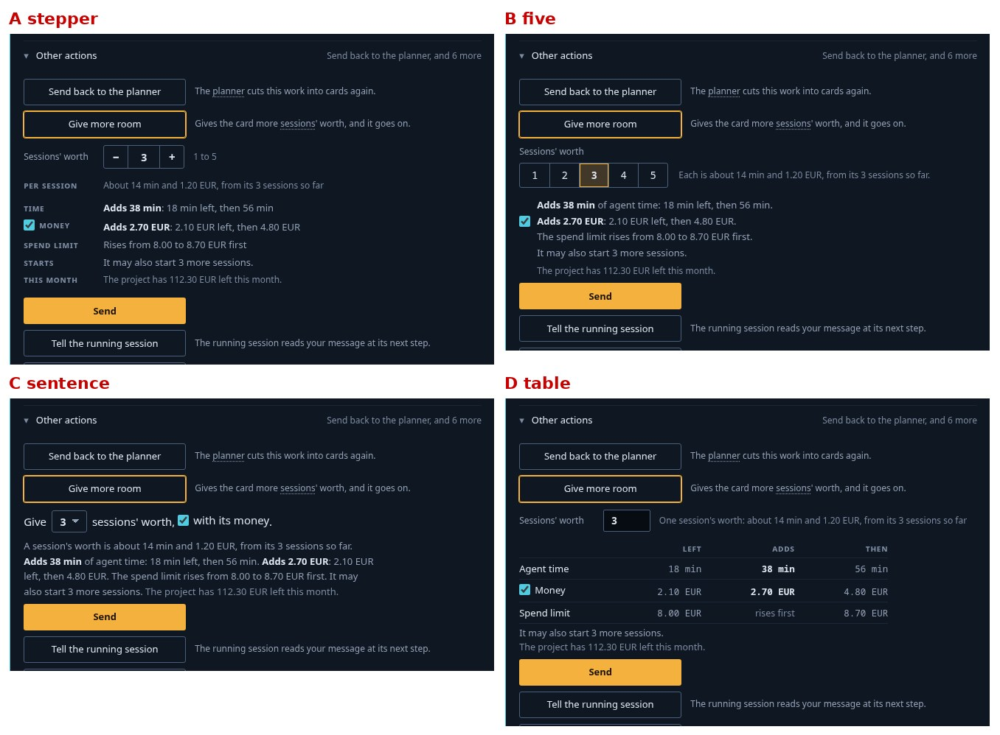
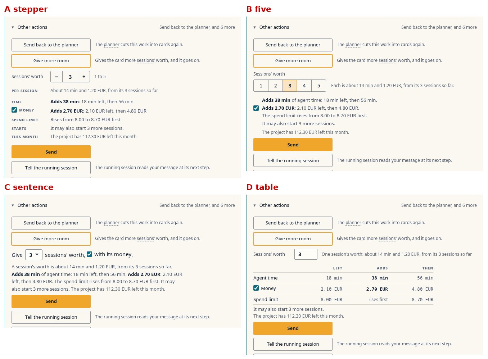
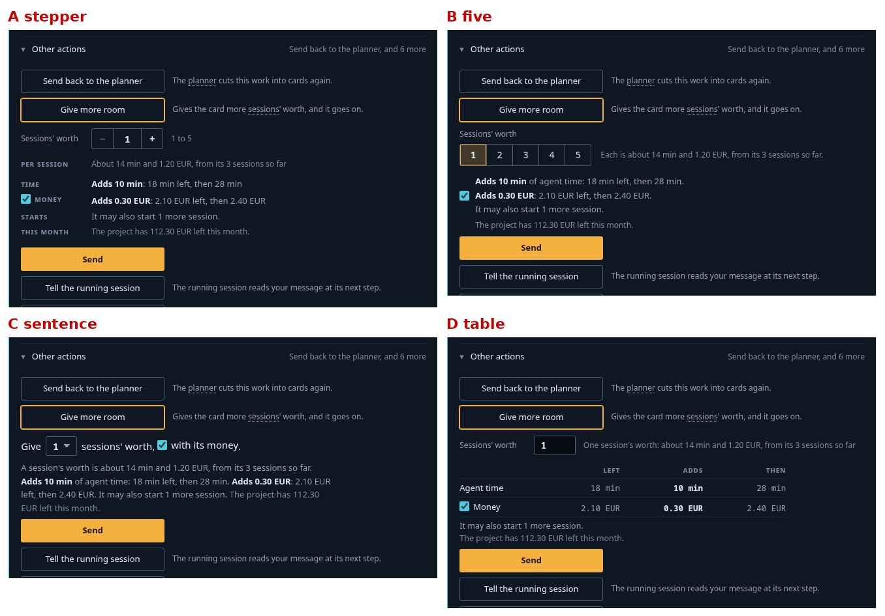
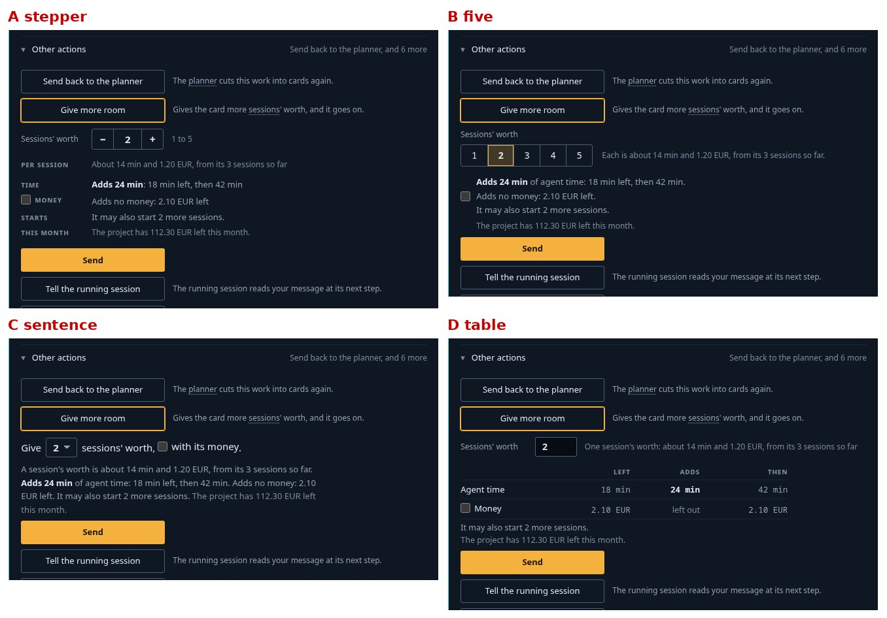
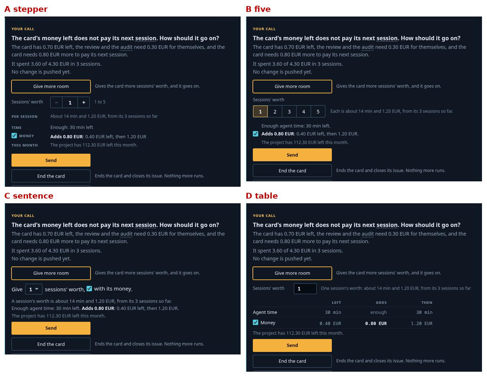
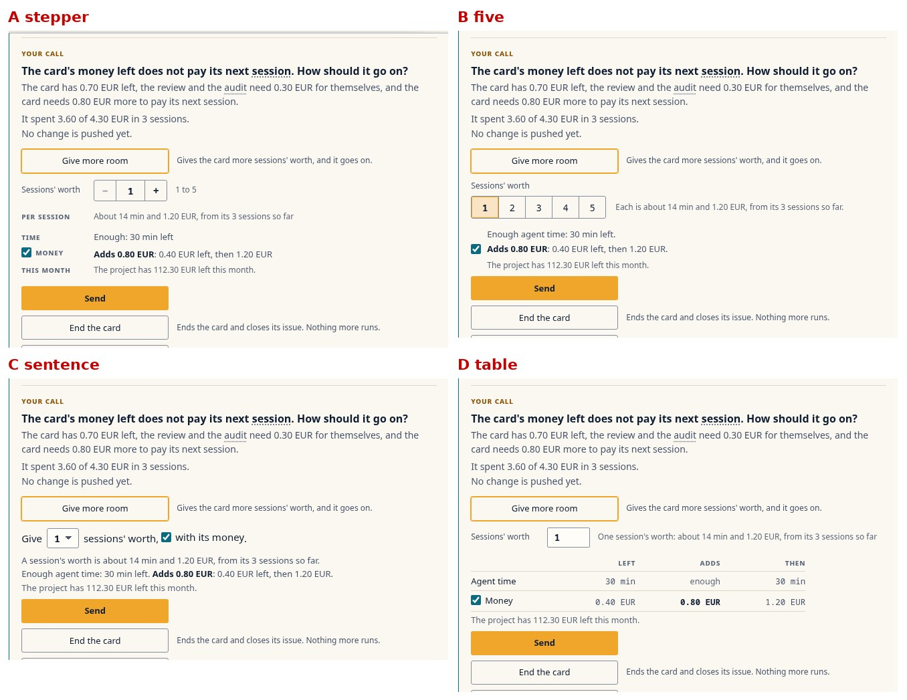
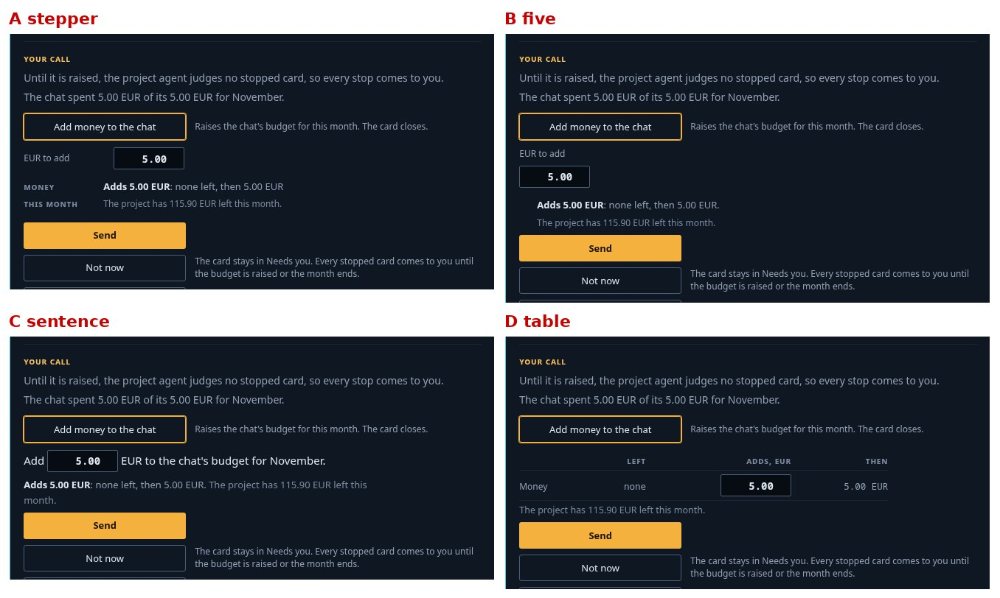
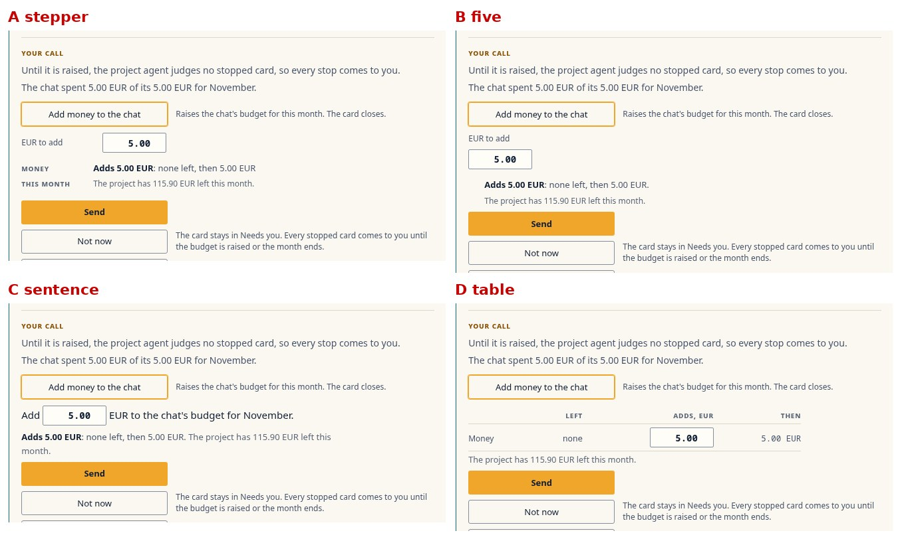
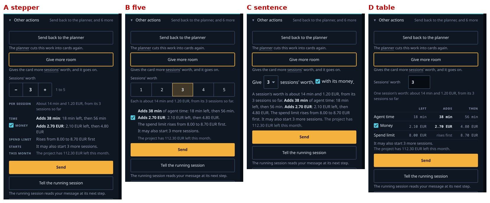
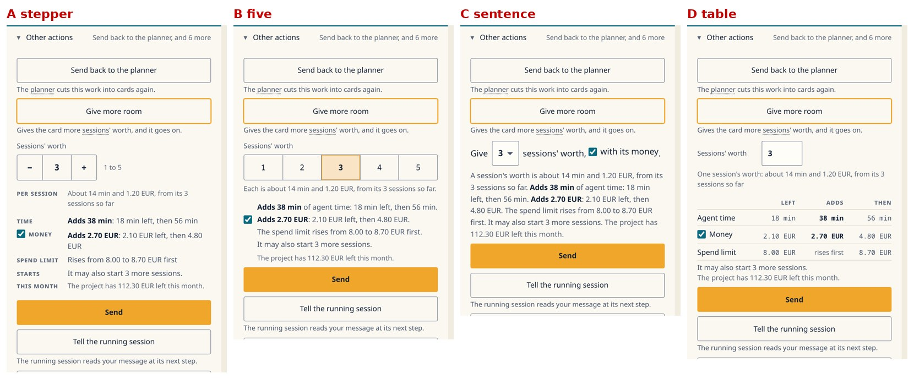
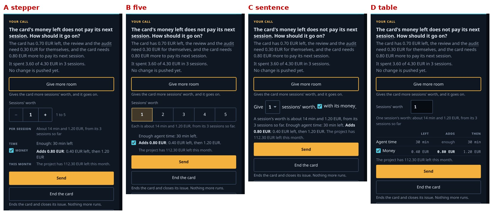
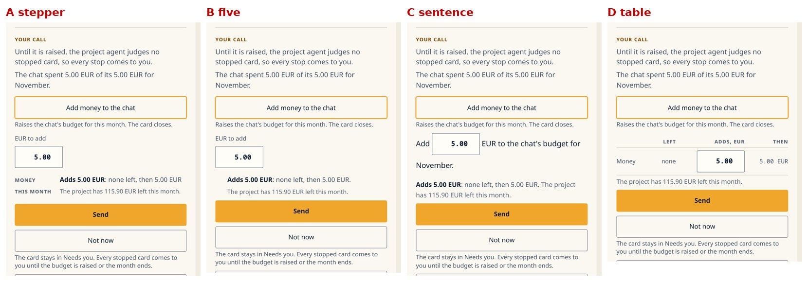
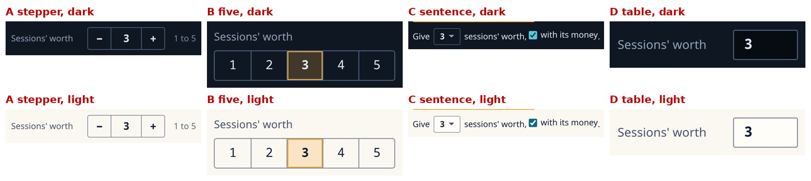
You judge four candidate designs for one control in a console that runs AI coding agents. Be concrete and critical; do not flatter.
The situation. Each piece of work is a card. A card has a cap on its sessions, a cap on its agent time and a money budget in EUR. The control "Give more room" gives a card more of all three at once, counted in "sessions' worth": one session's worth is this card's own average session so far (here about 14 min and 1.20 EUR, from its 3 sessions). The human picks a count from 1 to 5 (it opens at 1) and presses Send. The server works out what each resource lacks for that count and shows it as a readout, read again from the server on every change of the count or the tick; the browser computes no figure. Money comes with a tick: set when the card lacks money, and the human can clear it, so the press then gives time and starts but no money. When the money would pass the card's spend limit, the limit rises first. The human should accept the default without typing.
The readout's lines, in order: one session's worth and its source; time (what the press adds, what is left, what the card then has, or "enough"); money with its tick (the same three figures, "enough", or left out); the spend limit, only when it rises; the starts, only when they rise; the project's money left this month.
The control shows in three places: (1) ahead of time, among the opened card's "Other actions" on a running card; (2) at the money stop, as the first answer on the card's question; (3) on the chat's monthly budget question, which has no sessions: there only the money line shows, with an EUR field, and the month line. The button "Give more room", its effect line at its right, and the amber Send button are fixed; so are the theme colours.
The candidates:
- A. A stepper (minus, the count, plus) with "1 to 5". The readout as rows, each with a short small-caps label at its left (per session, time, money with its tick, spend limit, starts, this month).
- B. Five buttons 1 to 5 as one segmented row, one session's worth beside them. The readout as sentences with what the press adds in bold; the tick sits in the gutter of the money sentence, and the whole sentence is the tick's label.
- C. A sentence, "Give [3] sessions' worth, [tick] with its money.", the count a native choice inside it. The readout as one paragraph.
- D. A small number field, one session's worth beside it. Time and money (and the spend limit when it rises) as a table with the columns left, adds, then; the starts and the month as notes under it.
The images, in order:
1. Ahead of time at count 3 (the fullest readout: the spend limit and the starts rise), desk width 1440 px, dark theme. A top left, B top right, C bottom left, D bottom right.
2. The same, light theme.
3. Ahead of time at count 2 with the money tick cleared, desk, dark. Same order.
4. The money stop at count 1, desk, dark. Same order.
5. The chat's budget question, desk, light. Same order.
6. Phone width (390 px), ahead of time at count 3, dark: A, B, C, D from left to right.
7. The count control alone at 3x, dark row on top, light row below: A, B, C, D from left to right.
Judge each candidate on:
1. Count: how fast and how safely a human sets 1 to 5, by mouse, keyboard and touch; is the range plain?
2. Readout: does the eye find first what the press adds, then what the card then has? Do the spend limit line and the starts line read plainly, and does the control jump when they appear?
3. Tick: does the tick read as "this money, on this line"? Does the cleared state read plainly?
4. Places: does one look carry the three places, the chat's money line alone included?
5. Craft: contrast, alignment, hierarchy, tap targets of 44 px on the phone, crowded or cut text. Check the pixels and name the place.
Answer in JSON only:
{"scores": {"A": {"count": 1-10, "readout": 1-10, "tick": 1-10, "places": 1-10, "craft": 1-10, "notes": "..."}, "B": {...}, "C": {...}, "D": {...}},
"pick": "A|B|C|D", "runner_up": "A|B|C|D", "why": "...",
"fixes": ["numbered, concrete fixes for the pick and the runner-up, each naming the candidate and the place in the image"]}
```json
{
"scores": {
"A": {
"count": 7,
"readout": 8,
"tick": 8,
"places": 9,
"craft": 6,
"notes": "A solid, conventional design using rows. The readout is clear and structured. It is highly consistent across all placements. Its main weaknesses are the stepper, which requires multiple clicks for a small range, and very small tap targets for the stepper buttons and checkbox on mobile."
},
"B": {
"count": 10,
"readout": 4,
"tick": 9,
"places": 6,
"craft": 8,
"notes": "Features the best count control—a segmented button row perfect for the 1-5 range and touch interaction. However, the sentence-based readout is a critical flaw, making it difficult to scan and compare figures, which is a primary task. The input control is inconsistent in the chat budget view."
},
"C": {
"count": 4,
"readout": 1,
"tick": 5,
"places": 3,
"craft": 4,
"notes": "The weakest candidate. It prioritizes a conversational metaphor that fails in practice. The single-paragraph readout is illegible for data-scanning purposes. The count control (a native dropdown) is slow, hides the options, and has a small tap target. It is inconsistent and poorly crafted."
},
"D": {
"count": 3,
"readout": 10,
"tick": 10,
"places": 10,
"craft": 7,
"notes": "Features a superb tabular readout that is exceptionally clear, scannable, and professional. It handles all data states, including the cleared tick, with elegance. It is perfectly consistent across all placements. Its only significant flaw is the count control itself: a plain number input is a poor choice for selecting from a small, fixed range and it fails to communicate the range to the user."
}
},
"pick": "D",
"runner_up": "A",
"why": "D's tabular readout is vastly superior for scanning and comparing numerical data, which is the core task. This clarity is critical in a developer console. The design is elegant, data-dense, and consistent across all contexts. Its one flaw—the count input—is a simple component swap. A is a safe runner-up; its row-based layout is clear and functional, but less efficient for comparison than D's table. B has the best count control, but its un-scannable sentence readout is a deal-breaker for this application.",
"fixes": [
"1. For D (pick): Replace the count input. The plain number field is poor for this use case. Use the segmented button row from candidate B, as it is the fastest and clearest method for selecting from a small, fixed range. (Affects all images).",
"2. For D (pick): Enlarge the checkbox tap target. On mobile (Image 6, far right), the checkbox is too small. The entire first cell of the money row, containing the checkbox and 'Money' label, should be tappable.",
"3. For A (runner-up): Enlarge mobile tap targets. In Image 6 (far left), the stepper's `+`/`-` buttons and the money checkbox are far too small for touch. Increase their tappable area to at least 44x44px.",
"4. For A (runner-up): Improve the range indicator. The '1 to 5' text is disconnected from the stepper. A better approach is to disable the `-` button when the count is 1 and the `+` button when the count is 5, making the limits inherent to the control's state."
]
}
``````json
{
"scores": {
"A": {
"count": 9,
"readout": 9,
"tick": 8,
"places": 7,
"craft": 8,
"notes": "The stepper is the gold standard for bounded integer input (1-5), requiring no typing and offering physical affordances. The labeled row readout (PER SESSION, TIME, MONEY) creates a scannable 'audit log' feel essential for a console. The 'Spend Limit' and 'Starts' rows appear stably without breaking the layout grid."
},
"B": {
"count": 7,
"readout": 5,
"tick": 7,
"places": 7,
"craft": 6,
"notes": "The segmented buttons are fast for mouse but consume excessive horizontal real estate, especially on mobile (Image 6) where tap targets may shrink. The prose readout is the major weakness: burying critical figures like 'Spend limit' in a paragraph forces the user to read rather than scan, increasing the risk of missing a budget change."
},
"C": {
"count": 7,
"readout": 4,
"tick": 10,
"places": 9,
"craft": 9,
"notes": "The integration of the tick into the sentence ('[tick] with its money') is linguistically perfect and the best UX for the control itself. It also dominates the 'Chat' context (Image 5). However, it fails as a console tool: the paragraph readout obscures the arithmetic (Left + Adds = Then) and makes the 'Spend limit' rise hard to spot. It treats a financial control like a story."
},
"D": {
"count": 7,
"readout": 10,
"tick": 8,
"places": 4,
"craft": 7,
"notes": "The table readout is the objective winner for data verification. The 'Left / Adds / Then' columns map perfectly to the user's mental model of updating a budget. However, the design fails the 'Places' constraint catastrophically in the Chat context (Image 5), where displaying a 3-column table header to add 5 EUR is absurd over-engineering. The number field also lacks the 'bounded' guidance of the stepper."
}
},
"pick": "A",
"runner_up": "D",
"why": "Candidate A is chosen because it provides the most robust 'Console' experience. In an environment where agents spend time and money, the ability to rapidly scan labeled rows (Time, Money, Limits) is superior to reading prose (B/C) and more adaptable than the rigid table (D). While D has a superior readout format, A's Stepper is a better input mechanism for a fixed 1-5 range than D's generic text field, and A degrades gracefully into the Chat context (becoming a simple form), whereas D becomes unusable clutter.",
"fixes": [
"Candidate A, Place: Phone width (Image 6). The 'PER SESSION' and 'TIME' labels consume valuable width. Fix by abbreviating these labels to icons or stacking the label above the value on screens < 600px wide to prevent the stepper from shrinking below 44px tap height.",
"Candidate D, Place: Chat's budget question (Image 5). The table layout is inappropriate for a single-variable input. Fix by conditionally rendering the Candidate C sentence style ('Add [input] EUR...') when the context is the Chat budget question, reserving the Table for the Card views.",
"Candidate D, Place: Main Card Readout (Image 1). The 'Spend limit' and 'Starts' rows visually merge with the Time/Money data rows. Fix by adding a subtle background tint or a 'section break' line above the Spend limit row to signal that this is a derived system constraint, not a direct input result."
]
}
```A full-width number field, a checkbox above the readout, and six plain lines of one weight. "Enough: 30 min left" at the money stop does not say which resource it means.
Four critic calls, an estimated 0.12 USD of the 3 USD cap. No image was generated.